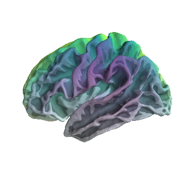

Note
Click here to download the full example code
Plot RGBA values on brain surface¶
In this example, each vertex on a 3D brain is plotted with a different RGBA value. Hue varies along the x-axis (right/left direction) and alpha varies along the z-axis (up/down direction). However, this can be easily generalised to other use cases.
import os
import numpy as np
import matplotlib.pyplot as plt
from mayavi import mlab
from tvtk.api import tvtk
from tvtk.common import configure_input_data
from surfer import Brain
print(__doc__)
# 1) define helper functions
def norm(x):
'''Normalise array betweeen 0-1'''
return (x - np.min(x)) / (np.max(x) - np.min(x))
# 2) init brain and get spatial co-ordinates
# params
subjects_dir = os.environ['SUBJECTS_DIR']
hemi = 'lh'
surf = 'white'
# init figure
fig = mlab.figure()
b = Brain('fsaverage', hemi, surf, subjects_dir=subjects_dir,
background='white', figure=fig)
# co-ordinates
x, y, z = b.geo[hemi].coords.T
tris = b.geo[hemi].faces
# 3) generate an rgba matrix, of shape n_vertices x 4
# define color map
cmap = plt.cm.viridis
# change colour based on position on the x axis
hue = norm(x)
colors = cmap(hue)[:, :3]
# change alpha based on position on the z axis
alpha = norm(z)
# combine hue and alpha into a Nx4 matrix
rgba_vals = np.concatenate((colors, alpha[:, None]), axis=1)
# 4) add data to plot
# plot points in x,y,z
mesh = mlab.pipeline.triangular_mesh_source(
x, y, z, tris, figure=fig)
mesh.data.point_data.scalars.number_of_components = 4 # r, g, b, a
mesh.data.point_data.scalars = (rgba_vals * 255).astype('ubyte')
# tvtk for vis
mapper = tvtk.PolyDataMapper()
configure_input_data(mapper, mesh.data)
actor = tvtk.Actor()
actor.mapper = mapper
fig.scene.add_actor(actor)
Total running time of the script: ( 0 minutes 0.535 seconds)